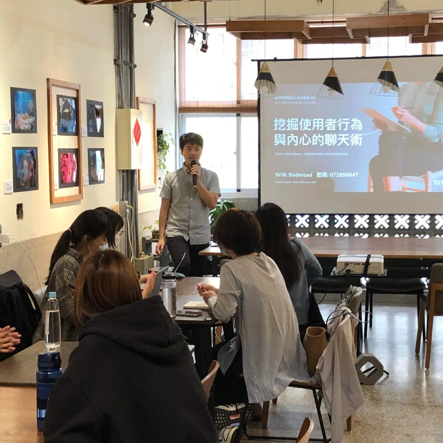
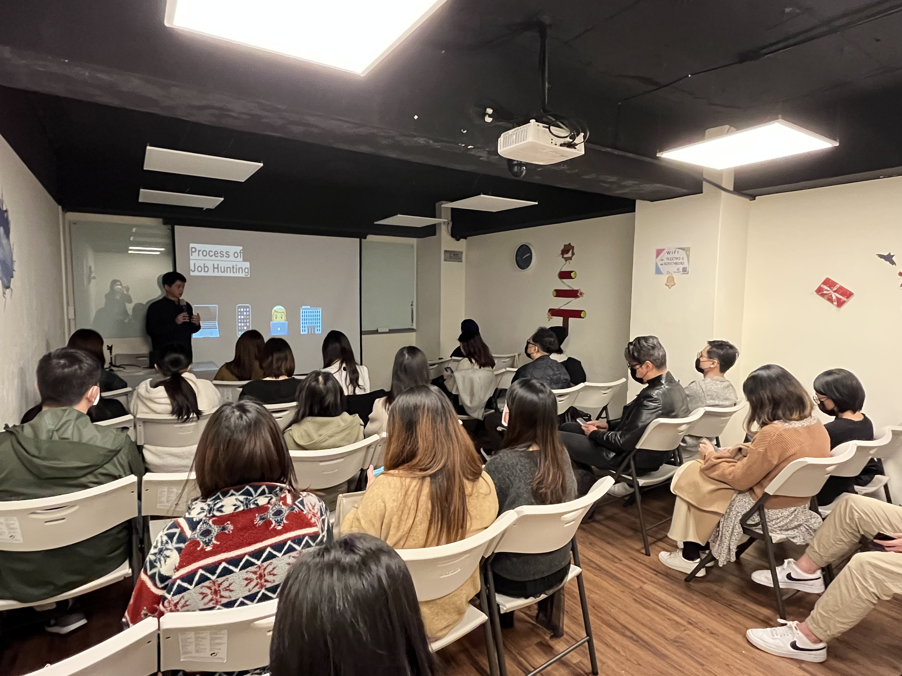
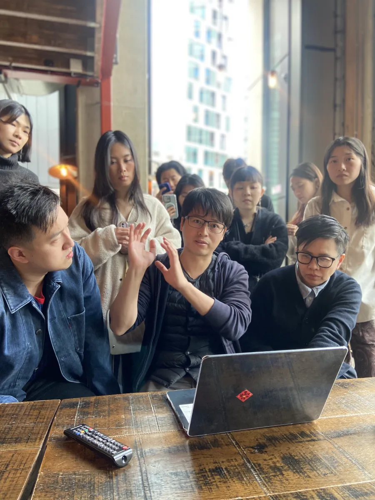
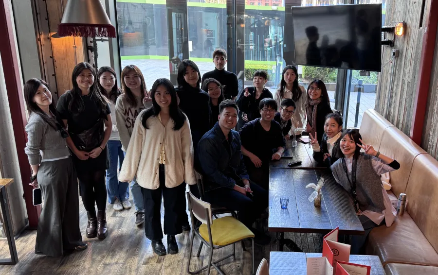
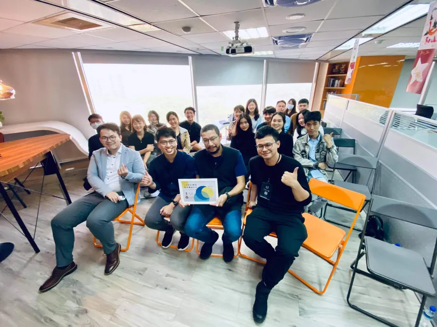
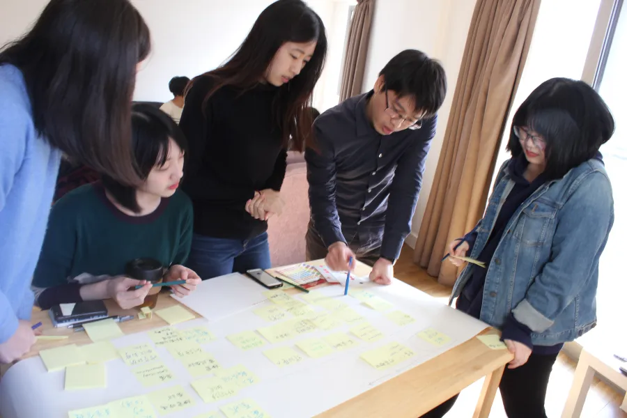

設計師求職諮詢
Chun-Chuan Lin
曾任職 Acer、Synology，後移居倫敦，在 Wealthtech 新創公司擔任第一位員工與 Founding Designer，設計服務 UHNW 客戶的 £9B+ 資產管理平台。現為 UX CIRCLES Founder & Design Consultant，同時在 Fintech 新創擔任資深設計師，產品服務超過 300 萬用戶。
2026 年，在倫敦做設計第八年。投了 300 份申請、80 場面試，走過每一個關卡，最後拿到 offer。現在用這段經歷幫你少走彎路。
🏆 ADPList Super Mentor · Top 1% Global Mentor






即將推出
用 AI 打造你的設計作品集
作品集是找設計工作最耗時的一關。很多人卡在不知道怎麼說清楚自己的設計過程。這門課教你用 AI 加速每個步驟，從整理思路、撰寫案例到優化呈現，讓你不再對著空白頁面發呆。
追蹤 Substack，開課時會直接收到通知
即將推出
如何在英國接國際設計案
想接案卻不知道從哪開始？這門課從英國接案的基本架構談起，涵蓋 Contractor 與 Freelancer 的差異、IR35 你必須知道的事、如何訂 Day rate、要不要成立 Limited Company，以及實際在哪些平台找到設計案。
追蹤 Substack，開課時會直接收到通知
一對一諮詢
視訊 · 60分鐘
£120
≈ NT$4,800
求職最浪費時間的事，是一個人在那裡猜。猜 hiring manager 在想什麼、猜定位對不對、猜薪資開口會不會嚇跑對方。60 分鐘，把最困擾的問題帶來——履歷、作品集、面試準備、薪資談判都可以，我們一起想清楚。
立即預約 →4週職涯陪跑
每週60分鐘視訊 ＋ 非同步支援
£450
≈ NT$18,000
找工作最難的不是努力，是不知道準備的方向對不對。四週把履歷、作品集、面試準備全部整理好。每週一次視訊討論進度，中間有問題隨時可以問。你不需要一個人摸索。
✦ 開始前提供 15 分鐘免費通話，確認適合再決定
預約免費通話 →以上為部分學員回饋，來自 ADPList、分享會及一對一諮詢
我不是職涯教練，我是剛走完這條路的人。
2026 年，在倫敦做設計第八年，我投了 300 份申請、面試 80 場、offer 被收回過，最後還是拿到了。
我也參與過 hiring，知道 hiring manager 實際在看什麼。
如果你想找一個真的懂英國設計職場的人說實話，我在這裡。
「之前在準備在英國轉職時，與圈圈討論作品集，得到很多實用的建議。後來我也真的找到了全職的 UX 工作！」
— Halyn C., UX Designer
「Your advice and encouragement gave me the confidence to pursue my dream job. I've landed a full-time product design role at a healthtech company.」
— Claire Z., Product Designer